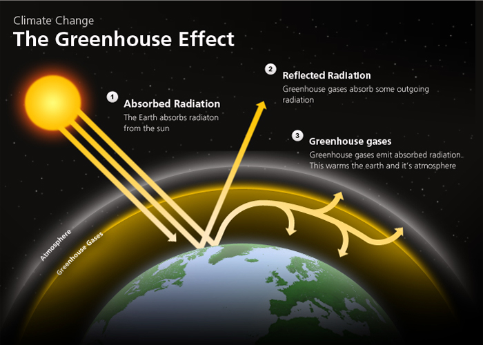

Every month, the NASA measures and publishes a record of monthly average temperature of the Earth. Data are acquired using more than 6 000 meteorological stations around the world. Thanks to advanced modelling they have been able to get estimations as far back as 1880 (there is no prior estimations as previous records didn't cover enough of the planet).
To be precise, what NASA publishes is not the absolute temperature but a deviation from the average, which they call anomalies.
For each month of the year, NASA calculates its average temperature over the 1951-1980 period. What is then published is the "distance" in degree celsius (°C ) between the recorded temperature for a month and this average. In the end, you know if for a given month, the Earth is colder or warmer than the "norm".
When it comes to climate, it is the long-term trends that matters. In the above figure, we see an on-going warming trend. Temperatures before 1940 are most of the time below the corresponding average for the month then between 1950 and 1980 they are oscillating around the average and from then they quickly increase to be in 2016 about 1 degree above the "norm".
Same thing but different
Looking at the above visualisation the increasing trend is obvious but how does it reflect on a yearly basis. The below visualisation allows you to see how the trends evolve from one year to another. Red lines correspond to recent year while blue year correspond to older years.
data for the months of September, October, November and December 2016 are estimates based on data for the previous month.
Recent years much warmer than the norm.
A more detailed view
Why does it get warmer?
The reasons behind the warming of the planet have been known for a long time. Back in 1824, Joseph Fourier recognized the existence of the greenhouse phenomena.
How does the greenhouse effect work?
The greenhouse effect mechanism is quite simple.
the sun emits some radiations. Some are reflected back by the atmosphere while some pass through it.
the Earth absorbs about 50% of the radiations that pass through the atmosphere while the other half is reflected out into space.
the absorbed radiation are converted to heat energy causing the emission of "infrared" radiation back to the atmosphere
some of the "infrared" radiation is absorbed by the greenhouse gas and re-emitted.
The diagram below explains this principle in a simplified manner.

Greenhouse gases are important for Earth climate. Without them, the average temperature of Earth's surface would be about -18 °C, rather than the present average of 15 °C.
The problem comes from the fact that since the beginning of the industrial revolution, human activity has progressively increased the level of CO2 - a greenhouse gas - in the atmosphere. Thus increasing the greenhouse effect and slowly warming the average temperature, which could have dire consequences for the various Earth ecosystems.
It led Alexander Graham Bell to already advocate, in 1917, the use of alternative energy sources .
If the causes and the risks are well-identified, are we taking the right measures to prevent this?
A blind society
Unfortunately, despite loud alerts by world renown scientists, no effective measures have been put into place yet and the total emissions of CO2 emissions keep on increasing.
In September 2016, the 400 parts of CO2 particles per million (ppm) threshold have been reached for what seem a permanent manner as September is usually the month with the lowest concentration of CO2 particles in the atmosphere.
400ppm is considered by a scientists to be the turning point in our fight against global warming. Once it is reached, controlling global warming will become more and more difficult. If we want to avoid an increase of catastrophic events, scientists think we should try to get back to a concentration of 350ppm of CO2 in the atmosphere.
Let's start inverting the trend for CO2 emissions and reduce our dependency towards fossil fuels.
The COP 21 agreement as well as the world city agreement - both signed in 2015 - are some steps in the right direction. We need to make sure they are followed by actions.
Credits
NASA data:
GISTEMP Team, 2016: GISS Surface Temperature Analysis (GISTEMP). NASA Goddard Institute for Space Studies. Dataset accessed 20YY-MM-DD at http://data.giss.nasa.gov/gistemp/.
Global surface temperature change
Hansen, J., R. Ruedy, M. Sato, and K. Lo, 2010: Global surface temperature change, Rev. Geophys., 48, RG4004, doi:10.1029/2010RG000345.
OECD CO2 data:
OECD (2016), Air and GHG emissions (indicator). doi: 10.1787/93d10cf7-en (Accessed on 27 September 2016)
Nasa has released a visualisation presenting the same data but corrected to include seasonal patterns.
Randall Munroe, in his blog xkcd.com, has drawn an amazing timeline of the earth's average temperature going back much further in time than I have above. The way he presented the information is just brillant, being the perfect combination of entertaining and smart.